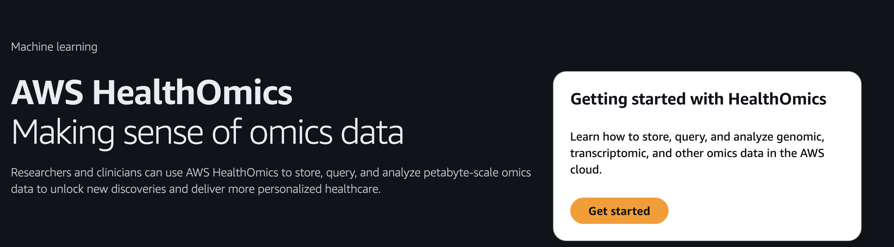
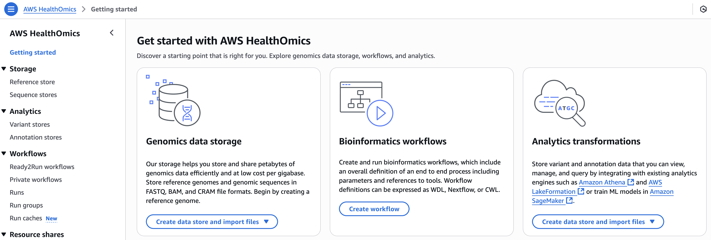
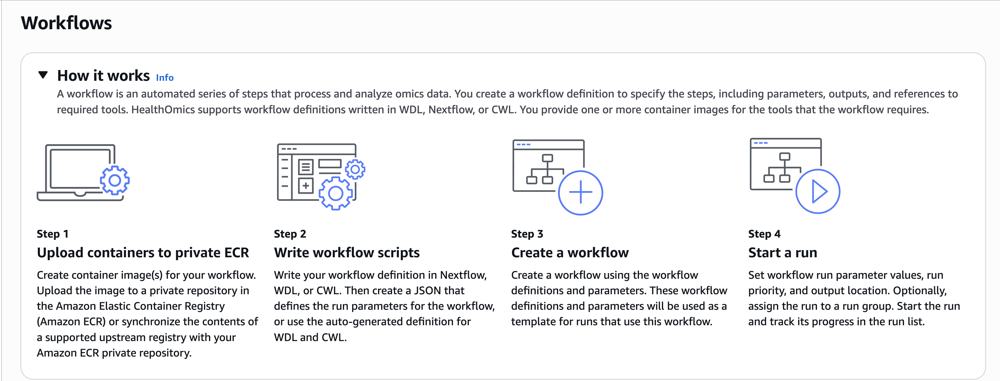
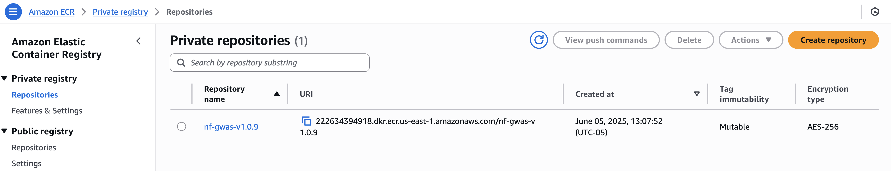
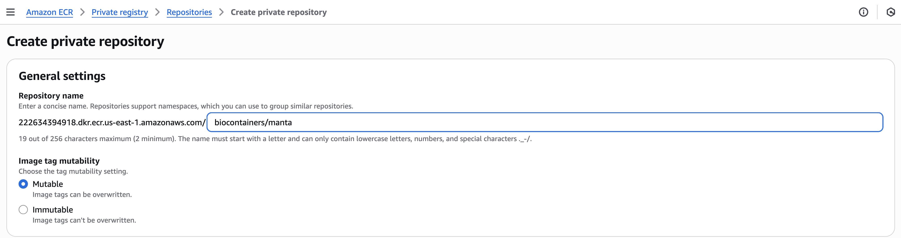
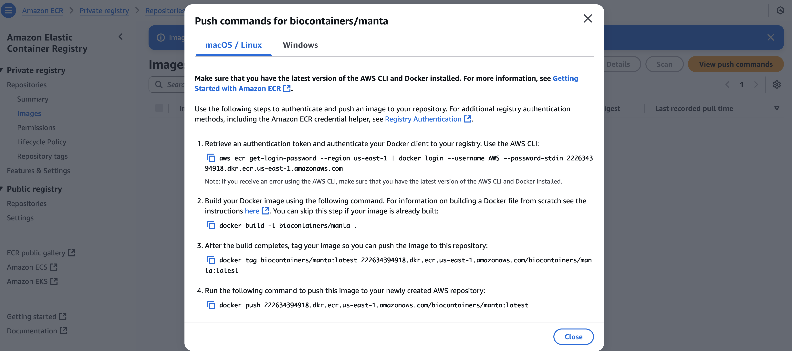
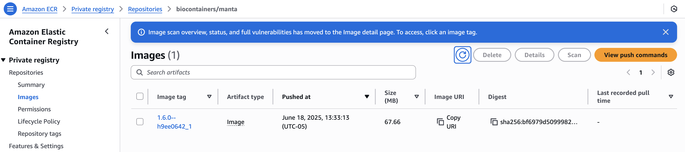

Step 8: Deploy to AWS HealthOmics
This step walks through how to deploy a workflow to AWS HealthOmics.
Start by visiting the HealthOmics landing page:

AWS HealthOmics provides three main services: - Storage - Workflows - Analytics
For our use case, we will focus on Workflows. Select Create workflows in the Bioinformatics workflows section:

On the next screen, the How it works panel outlines the four steps involved in creating and running a workflow:

Container Requirements
One important consideration when using AWS HealthOmics is that all workflow containers must be uploaded to Amazon Elastic Container Registry (ECR) — AWS’s managed container registry (similar to Docker Hub).
In our case, we’re using modules that specify containers, Singularity images, or Conda environments. Since HealthOmics uses Docker, we need to upload the Docker container manually to a private ECR repository.
In our example, the container required by the module can be found in the manta/germline/main.nf script:
process MANTA_GERMLINE {
tag "$meta.id"
label 'process_medium'
label 'error_retry'
conda "${moduleDir}/environment.yml"
container "${ workflow.containerEngine == 'singularity' && !task.ext.singularity_pull_docker_container ?
'https://depot.galaxyproject.org/singularity/manta:1.6.0--h9ee0642_1' :
'biocontainers/manta:1.6.0--h9ee0642_1' }"
This indicates that we need the biocontainers/manta:1.6.0--h9ee0642_1 Docker image.
We can confirm in nextflow.config that the image is pulled from quay.io, a widely used public registry:
docker.registry = 'quay.io'
Since HealthOmics cannot pull directly from quay.io, we need to:
- Pull the container locally from
quay.io. - Push it to a private ECR repository.
Step 1: Upload the Container to Private ECR
Navigate to Amazon ECR > Private repositories. You should see a screen like this:

Click Create repository, and for the name, use something like biocontainers/manta.

Once the repository is created, enter it and click View push commands to get the Docker commands needed to upload your image:

You'll need a shell environment with both docker and awscli installed. Here's an example of the push commands:
$ export AWS_ACCESS_KEY_ID="EXAMPLEASIATHVQLIU"
$ export AWS_SECRET_ACCESS_KEY="EXAMPLED39E9YrpO6odnxZzuFnyexzVJl2ixt"
$ export AWS_SESSION_TOKEN="EXAMPLEIQoJb3JpZ2luX2VjEKv//////////wEaCX..."
$ aws ecr get-login-password --region us-east-1 \
| docker login --username AWS \
--password-stdin 222634394918.dkr.ecr.us-east-1.amazonaws.com
$ docker pull quay.io/biocontainers/manta:1.6.0--h9ee0642_1
$ docker tag quay.io/biocontainers/manta:1.6.0--h9ee0642_1 \
222634394918.dkr.ecr.us-east-1.amazonaws.com/biocontainers/manta:1.6.0--h9ee0642_1
$ docker push 222634394918.dkr.ecr.us-east-1.amazonaws.com/biocontainers/manta:1.6.0--h9ee0642_1
After pushing, you should see your image in the repository:

Step 2: Prepare Workflow Definition and Parameters
HealthOmics expects:
- A workflow definition (in our case, a Nextflow script)
- A JSON file that defines input parameters and execution settings
We already have the Nextflow pipeline defined. Now we just need to create the corresponding JSON parameter file.
Step 3: Create a Workflow
In this step, you’ll upload your Nextflow script and JSON file to HealthOmics to define a reusable workflow.
Once created, this workflow can be used as a template for future runs.
Step 4: Start a Run
You're now ready to execute the workflow!
Configure:
- Parameter values
- Run priority
- Output location
- (Optional) Run group
Then launch the run and monitor its progress via the HealthOmics dashboard.
🛠️ Automation Note
All of these steps can also be executed programmatically using the AWS CLI or SDKs, which is useful for scaling or integrating into CI/CD pipelines.
📊 Job Monitoring
Once the workflow is running, HealthOmics provides monitoring capabilities to track job status, runtime logs, and output artifacts.